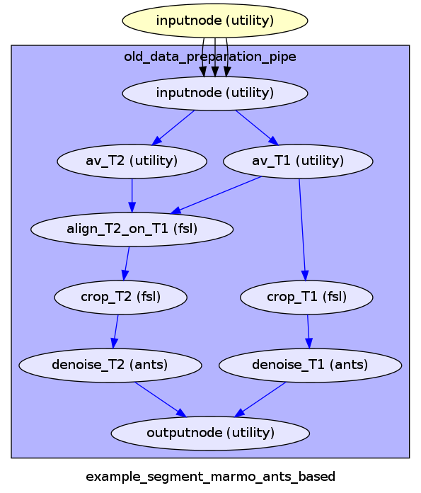
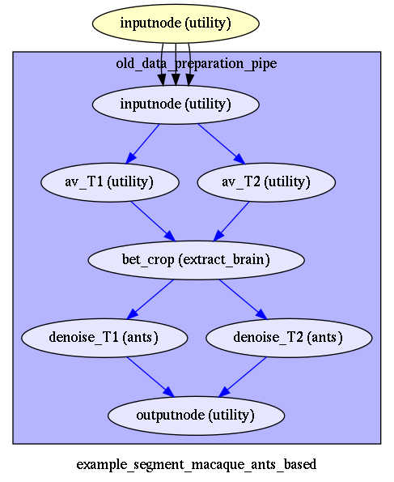
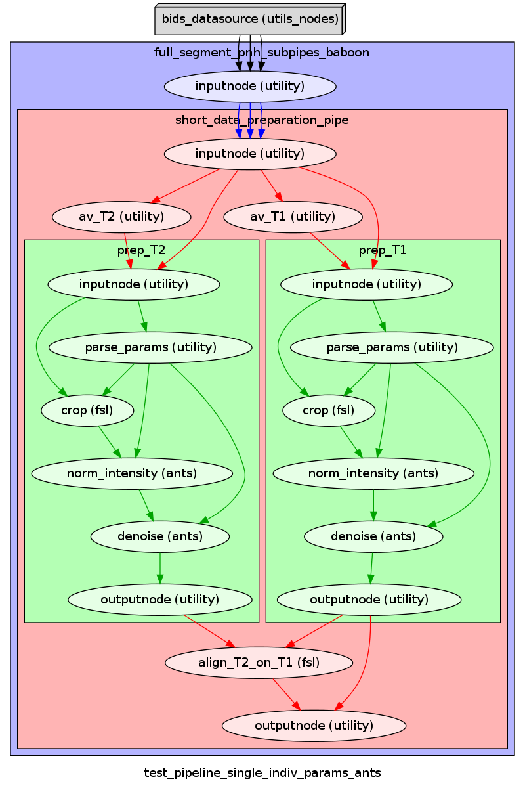
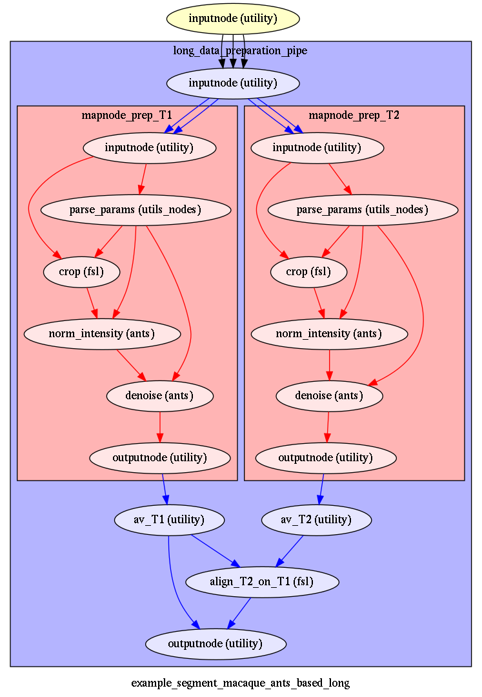

Old data preparation corresponds to the pipelines where T1 and T2 images are averaged by modality from the beginning, and T2 is aligned to T1, then cropped or betcropped, and denoised.
|  |  |
Version with crop are used in marmoset example, the version with betcrop is used in both macaque examples with SPM and ANTS
In some cases, you may want some processing done prior to the alignement, if T1 and T2 are very different.
In this case, after aligning and averaging by modality (all T1s -> average_T1), you may crop, debias (N4) and denoise each image (average_T1 and average T2) indendantly before aligning average_T2 to average_T1 (short_data_preparation)
But in a very specific case, where the data of multiple sessions have been acquired with different settings (e.g. antenna contrast), you may have even all multiple modality data preprocessed (reorient, cropped, debiased, denoised) indendantly before being averaged and aligned by modality, and then av_T2 aligned to av_T1 (long_data_preparation)
|  |  |
The short version is used for the baboon example, the long version has been tested on a data set with multiple T1s (not shown in examples).
{kind=link}
{kind=link}
{kind=link}
{kind=link}